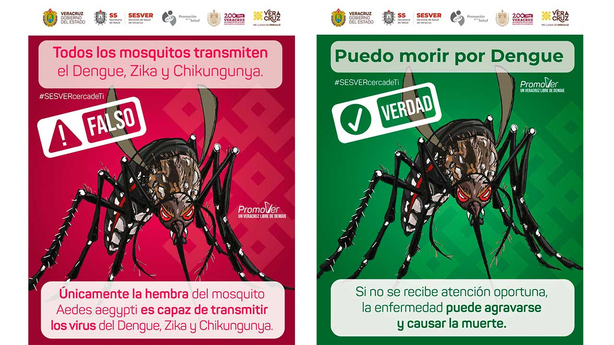

Comprende el Dengue: Causas, Transmisión y Tipos
Explora información esencial y recursos prácticos para protegerte a ti y a tu comunidad del dengue.
GUÍA DE PREVENCIÓN

¿Qué es el Dengue?
Enfermedad viral febril aguda transmitida por la picadura del mosquito hembra *Aedes aegypti*, principalmente.
Serotipos del Virus
Existen cuatro serotipos de dengue (DENV-1, DENV-2, DENV-3, DENV-4). La infección por uno confiere inmunidad permanente a ese serotipo, pero no a los otros.
Formas de Transmisión
Exclusivamente por la picadura de mosquitos infectados. El mosquito se infecta al picar a una persona con dengue.
Fases de la Enfermedad
Se divide en tres fases: febril, crítica (algunos casos) y de recuperación. La detección temprana es crucial.